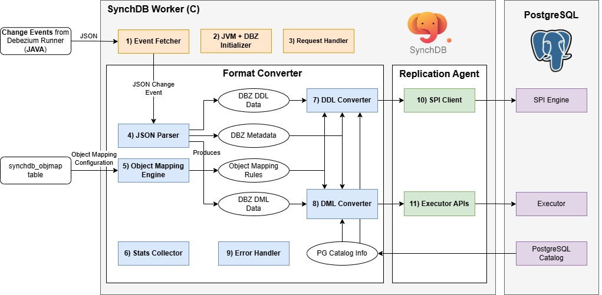

Debezium 事件处理器 - C¶
Debezium 事件处理器组件图¶

Debezium 事件处理器是由 SynchDB 扩展发起和启动的 PostgreSQL 后台工作进程。它负责初始化 Java 虚拟机 (JVM)，运行 Debezium Runner模块，（它是 SynchDB 的 Java 部分），利用嵌入式 Debezium 引擎从异构数据库源获取更改事件。每个 SynchDB 工作进程都由下面列出的组件和模块组成：
- 事件获取器
- JVM + DBZ 初始化程序
- 请求处理器
- JSON 解析器
- 对象映射引擎
- 统计信息收集器
- DDL 转换器
- DML 转换器
- 错误处理程序
- SPI 客户端
- 执行器 API
1) 事件获取器¶
事件获取器主要负责从运行在 JVM 中的嵌入式 Debezium Runner 获取一批 JSON 变更事件。此操作通过 Java 接口 (JNI) 库完成，通过定期调用 JAVA 函数返回一个 JAVA String 列表，该列表以 JSON 格式表示每个变更请求。此列表 表示一批 JSON 变更事件。再次调用 JNI 库来迭代此 List，将内容从 JAVA String 转换为 C 字符串，并将其发送到 4) JSON 解析器 进行进一步处理。获取频率可通过 synchdb.naptime 配置，批次的最大大小可通过 synchdb.dbz_batch_size 配置。
当批次完成时，即其中的所有更改事件都已处理完毕，它将通过 JNI 调用 markBatchComplete() JAVA 函数以指示此批次已成功完成。这将导致 Debezium Runner 提交并推进偏移量。有关批次管理的更多信息，请参见此处。
2) JVM + Debezium (DBZ) 初始化程序¶
JVM + DBZ 初始化程序主要负责实例化新的 JVM 环境并在其中运行 Debezium Runner (dbz-engine-x.x.x.jar)。此 .jar 文件默认安装在 pg_config 返回的 $LIBDIR 中。您也可以通过设置环境变量 DBZ_ENGINE_DIR 为 Debezium Runner .jar 文件指定备用路径。SynchDB 当前使用 JNI_VERSION_10 作为 JNI 版本，兼容 JAVA v10 至 v18。但是，将来我们可能会升级 JNI 版本以获得 JNI 的最新改进和优势。可以通过 synchdb.jvm_max_heap_size 配置分配给 JVM 的最大heap内存。如果设置为零，JVM 将自动分配理想的heap大小。
请注意，每个 SynchDB 工作进程都会初始化并运行一个 JVM 实例，因此运行的工作进程越多，所需的heap内存就越多。您可以通过调用 synchdb_log_jvm_meminfo('$connector_name') 函数查看 SynchDB 工作进程的 JVM 当前heap和非heap内存使用情况，内存摘要将记录在 PostgreSQL 日志文件中。
3) 请求处理器¶
请求处理器主要负责检查和处理来自 SynchDB 用户的任何传入状态更改请求。此类状态更改请求的示例包括从“同步”到“暂停”，从“暂停”到“更新偏移”等。以下是 synchdb 的状态图。更多信息可以在 此处 找到。

4) JSON 解析器¶
JSON 解析器负责将传入的 JSON 更改事件解析为 SynchDB 可以使用的 C 结构。SynchDB 依赖 PostgreSQL 的原生 JSONB 解析器来满足所有解析和迭代需求。对于 DML JSON 事件，它首先解析 JSON 更改事件的“架构”部分（在本文档中也称为元数据），以了解 Debezium 如何表示用户数据。这包括每个字段的数据类型表示、值的比例……等等。然后，它解析“有效负载”以获取“之前”和“之后”的值。最后，它解析“源”部分以获取表名、数据库名称和数据来源的连接器类型。
对于 DML JSON 事件，将解析相同的部分，但“有效负载”下预期的属性不同。它解析“有效负载”下的“tableChanges”以了解指定表的列名、类型和其他属性。
根据操作的性质，生成的 C 结构数据随后被发送到 DDL Converter（用于 DDL 请求）或 DML Converter（用于 DML 请求）进行下一阶段的处理。以下是 JSON 事件中 DDL 和 DML“有效负载”的示例：
DML 有效负载：
{
"payload": {
"before": null,
"after": {
"id": 3,
"g": {
"wkb": "AQMAAAABAAAABQAAAAAAAAAAAAAAAAAAAAAAFEAAAAAAAAAAQAAAAAAAABRAAAAAAAAAAEAAAAAAAAAcQAAAAAAAAAAAAAAAAAAAHEAAAAAAAAAAAAAAAAAAABRA",
"srid": null
},
"h": null
},
"source": {
"version": "2.6.2.Final",
"connector": "mysql",
"name": "synchdb-connector",
"ts_ms": 1743631156000,
"snapshot": "last",
"db": "inventory",
"sequence": null,
"ts_us": 1743631156000000,
"ts_ns": 1743631156000000000,
"table": "geom",
"server_id": 0,
"gtid": null,
"file": "mysql-bin.000009",
"pos": 1026620577,
"row": 0,
"thread": null,
"query": null
},
"op": "r",
"ts_ms": 1743631156410,
"ts_us": 1743631156410423,
"ts_ns": 1743631156410423395,
"transaction": null
}
}
DDL 有效负载：
"payload": {
"source": {
"version": "2.6.2.Final",
"connector": "sqlserver",
"name": "synchdb-connector",
"ts_ms": 1728337635149,
"snapshot": "true",
"db": "testDB",
"sequence": null,
"ts_us": 1728337635149000,
"ts_ns": 1728337635149000000,
"schema": "dbo",
"table": "customers",
"change_lsn": null,
"commit_lsn": "00000195:000010a0:0003",
"event_serial_no": null
},
"ts_ms": 1728337635150,
"databaseName": "testDB",
"schemaName": "dbo",
"ddl": null,
"tableChanges": [
{
"type": "CREATE",
"id": "\"testDB\".\"dbo\".\"customers\"",
"table": {
"defaultCharsetName": null,
"primaryKeyColumnNames": [
"id"
],
"columns": [
{
"name": "id",
"jdbcType": 4,
"nativeType": null,
"typeName": "int identity",
"typeExpression": "int identity",
"charsetName": null,
"length": 10,
"scale": 0,
"position": 1,
"optional": false,
"autoIncremented": true,
"generated": false,
"comment": null,
"defaultValueExpression": null,
"enumValues": null
},
{
"name": "first_name",
"jdbcType": 12,
"nativeType": null,
"typeName": "varchar",
"typeExpression": "varchar",
"charsetName": null,
"length": 255,
"scale": null,
"position": 2,
"optional": false,
"autoIncremented": false,
"generated": false,
"comment": null,
"defaultValueExpression": null,
"enumValues": null
},
{
"name": "last_name",
"jdbcType": 12,
"nativeType": null,
"typeName": "varchar",
"typeExpression": "varchar",
"charsetName": null,
"length": 255,
"scale": null,
"position": 3,
"optional": false,
"autoIncremented": false,
"generated": false,
"comment": null,
"defaultValueExpression": null,
"enumValues": null
},
{
"name": "email",
"jdbcType": 12,
"nativeType": null,
"typeName": "varchar",
"typeExpression": "varchar",
"charsetName": null,
"length": 255,
"scale": null,
"position": 4,
"optional": false,
"autoIncremented": false,
"generated": false,
"comment": null,
"defaultValueExpression": null,
"enumValues": null
}
],
"comment": null
}
}
]
}
5) 对象映射引擎¶
对象映射引擎负责加载和维护每个活动连接器下的对象映射信息。这些映射信息告诉 SynchDB 如何在 DDL 和 DML 处理期间将源对象映射到目标对象。默认情况下，Synchdb 没有对象映射规则，它将使用默认映射规则来处理数据。
对象可以引用： * 表名。 * 列名。 * 数据类型。 * 转换表达式。
可以使用synchdb_add_objmap() 函数创建映射规则之前将源表名、列名和数据类型映射到不同的目标表名、列名和数据类型，并且可以通过查询synchdb_objmap 表来查看所有规则。有关对象映射的更多信息，请参见此处。在synchdb_att_view() 视图下可以查看哪些内容映射到哪些内容的摘要。
转换表达式 是一个 SQL 表达式，将在数据转换完成后、应用数据之前运行（如果指定）。此表达式可以是 PostgreSQL 中可运行的任何表达式，例如调用另一个 SQL 函数或使用运算符。有关对象映射规则的更多信息，请参见此处。
6) 统计收集器¶
统计收集器负责收集 SynchDB 自操作开始以来的数据处理统计信息。这包括 DDL 和 DML 的数量、已处理的 CREATE、INSERT、UPDATE、DELETE 操作数量、处理的平均批处理大小以及描述数据在源中首次生成时间、Debezium 处理数据的时间以及在 PostgreSQL 中应用数据的时间的几个时间戳。这些指标可以帮助用户了解 SynchDB 的处理行为，以调整和优化设置以提高处理性能。有关统计数据的更多信息，请参见此处。
7) DDL 转换器¶
DDL 转换器负责将“JSON 解析器”生成的 DDL 数据转换为 PostgreSQL 可以理解的格式。对于 DDL，SynchDB 依赖 PostgreSQL SPI 引擎进行处理，因此转换的输出是正常的 SQL 查询字符串。DDL 转换器检查 DDL 数据，并必须与“对象映射引擎”配合使用，以正确转换源和目标之间的表、列名称或数据类型映射。
如果要根据“对象映射引擎”将名为“employee”的远程表映射到目标中的“staff”，则 DDL 转换器负责解析这些名称映射并相应地为 SPI 创建 SQL 查询。
转换器目前可以处理以下 DDL 操作：
- 创建表 CREATE TABLE
- 删除表 DROP TABLE
- 更改表更改列 ALTER TABLE ALTER COLUMN
- 更改表添加列 ALTER TABLE ADD COLUMN
- 更改表删除列 ALTER TABLE DROP COLUMN
对于 CREATE 和 DROP，转换器能够从输入的 DDL 数据中为 SPI 创建相应的查询字符串。对于 ALTER、ADD 和 DROP COLUMN，转换器需要访问 PostgreSQL Catalog以了解现有表属性，并确定是否有要添加、删除或更改的列。Debezium 的 JSON 更改事件始终包含整个表的信息，并且不会明确指出已删除或添加的内容。因此，需要 DDL 转换器组件来找出此信息并生成正确的查询字符串。有关 DDL 复制的更多信息，请参见此处
8) DML 转换器¶
DML 转换器负责将“JSON 解析器”生成的 DML 数据转换为 PostgreSQL 可以理解的格式。对于 DML，SynchDB 依赖 PostgreSQL 的执行器 API 将数据直接应用于 PostgreSQL，因此转换的输出是 PostgreSQL 执行器可以理解的 TupleTableSlot (TTS) 格式。为了让 PostgreSQL 生成正确的 TTS，DML 转换器依赖于：
- 描述负载数据格式 DBZ 元数据
- PostgreSQL 目录 (pg_class 和 pg_type)，用于了解目标表的信息、每列的数据类型和属性。
- 对象映射规则，用于确定是否需要在处理的数据上运行额外的转换表达式
- 要处理的数据
DML 转换器由几个例程组成，这些例程可以处理特定的输入数据类型并生成特定的输出类型。为特定转换场景选择正确的例程可能是一个挑战，因为某些数据类型可能是用户定义的，或者由 SynchDB 不太了解的其他扩展创建。SynchDB 必须设计为处理 PostgreSQL 中可能存在的本机和非本机数据类型。
例程选择首先查看在 PostgreSQL 中创建的数据类型，该数据类型可分为 2 种类型，每种类型的处理技术略有不同：
数据转换¶
在输入数据通过上述逻辑处理后，转换器将检查用户是否已配置“转换表达式”，该表达式应在应用于 PostgreSQL 之前应用于已处理的数据。转换表达式可以是任何可以在 psql 提示符上运行的 PostgreSQL 表达式、命令或 SQL 函数。它使用“%d”作为占位符，在转换期间将替换为已处理的数据。例如，转换表达式“'>>>>>' || '%d' || '<<<<<'”将在已处理的字符串数据前面和后面添加其他字符。
因此，如果非本地数据类型具有 TYPCATEGORY_USER 类别，DML 转换器没有合适的例程来处理此数据并将保持原样，我们可以定义一个转换表达式来调用自定义 SQL 函数，它知道如何正确处理数据并生成合适的输出。例如，表达式“to_my_composite_type('%d')”将使用数据作为输入来调用用户定义的 SQL 函数“to_my_composite_type”。表达式必须具有返回值，因为它将在应用期间输入到 PostgreSQL 中。
9) 错误处理程序¶
错误处理程序主要负责处理数据同步各个阶段可能出现的任何错误。格式转换器支持多种错误处理策略，可通过 “synchdb.error_handling_strategy” 参数进行配置。详情请参阅此处。
10) SPI Client¶
SPI Client 组件存在于 Replication Agent 下，它充当 PostgreSQL 核心和 SynchDB 之间的桥梁。它负责建立与 SPI 服务器的连接、启动事务、获取快照并执行由 DDL Converter 创建的给定 SQL 查询并销毁连接。对于要处理的每个查询，都会创建和销毁 SPI 连接，这似乎效率不高。由于 SPI 仅在 DDL 期间使用，而这通常不太频繁，因此在性能方面应该没问题。
11) 执行器 API¶
也驻留在复制代理中。此组件负责初始化执行器上下文、打开表、获取适当的锁、从 DML 转换器的输出创建 TupleTableSlot (TTS)、调用执行器 API 执行 INSERT、UPDATE、DELETE 操作并进行资源清理。这通常是一种比 SPI 更快的数据操作方法，因为它不需要像 SPI 那样解析输入查询字符串。